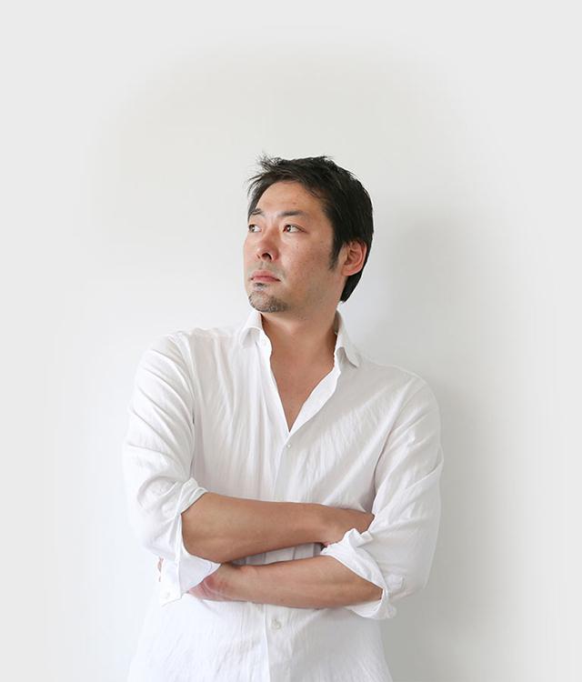

본문 영역
BALMUDA 연혁
- 회사명
- BALMUDA Inc.
- 대표자
- 대표이사 테라오 켄
- 설립
- 2003年3月
BALMUDA Story
BALMUDA Story
발뮤다는 2003년 일본 도쿄에서 설립되었습니다. 미래를 창조적으로 그리며 기술의 힘으로 현재를 실현하고 궁극적으로 사람들에게 도움이 되는 것을 만드는 것이 우리의 사명입니다.
현재 발뮤다가 주력하는 분야는 가전제품입니다.가전제품은 사람의 수고를 덜어줌으로써 생활을 보다 편리하게 도와왔습니다.
그러나 삶의 양식이 변화함에 따라 가전제품에도 더욱 새로운 모습들이 필요합니다.
현대를 살아가는 사람들은 살면서 사용하게 되는 '도구'에 있어 감동과 때로는 놀라움을 느끼기를 원합니다.
발뮤다는 가전제품이라는 '도구'를 통해 저희가 느낀 깊은 감동과 놀라움을 여러분과 나누고 싶습니다.
테라오 겐
테라오 겐 Gen Terao
17세에 고등학교를 중퇴하고, 스페인, 이탈리아, 모로코 등의 지중해를 따라 방랑 여행을 시작합니다.
귀국 후 음악 활동을 시작하지만, 대기업 음반회사와의 계약/파기 등 어려움을 겪으면서 밴드 활동에만 전념하게 됩니다.
2001년 밴드를 해체한 후 제품 제조의 길에 뜻을 두게 됩니다.
독학하면서 공장에 뛰어들어 설계, 제조법을 습득한 후 2003년 유한회사 발뮤다 디자인을 설립합니다.